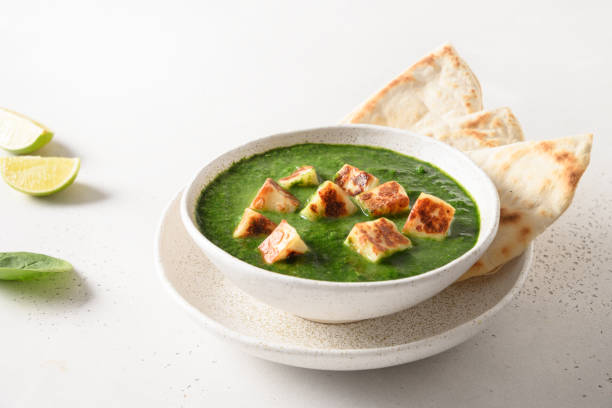

Palak Paneer Recipe
Ingredients :
- Spinach (Palak): 500 grams
- Paneer (Indian cottage cheese): 200 grams
- Onion: 1 large, finely chopped
- Tomato: 2 medium, pureed
- Ginger-Garlic Paste: 1 tablespoon
- Green Chilies: 2, chopped
- Cumin Seeds: 1 teaspoon
- Garam Masala: 1 teaspoon
- Turmeric Powder: 1/2 teaspoon
- Red Chili Powder: 1/2 teaspoon
- Coriander Powder: 1 teaspoon
- Fresh Cream: 2 tablespoons (optional)
- Oil or Ghee: 2 tablespoons
- Salt: to taste
- Water: as needed
Preparation Process :
- The Spinach:
- Bring a large pot of water to a boil.
- Add the spinach and blanch for 2-3 minutes.
- Remove and immediately transfer to a bowl of ice water to preserve the green color.
- Drain and blend the spinach to a smooth puree. Set aside.
- Prepare Paneer:
- Cut the paneer into cubes.
- Optional: Lightly fry the paneer cubes in a little oil until golden brown on all sides.
This step is optional but adds extra flavor and texture..
- Cook the Base:
- Heat oil or ghee in a pan over medium heat.
- Add cumin seeds and let them splutter.
- Add finely chopped onions and sauté until golden brown
- Add ginger-garlic paste and green chilies, and sauté for a minute until the raw smell disappears.
- Add Tomatoes and Spices:
- Add tomato puree and cook until the oil separates from the mixture.
- Add turmeric powder, red chili powder, coriander powder, and salt. Mix well and cook for 2-3 minutes.
- Combine Spinach and Paneer:
- Add the spinach puree to the pan and mix well.
- Add a little water if the gravy is too thick. Bring it to a gentle boil.
- Add the paneer cubes and simmer for 5-7 minutes.
- Finish the Dish:
- Add garam masala and fresh cream (if using). Mix well.
- Adjust the salt and spice levels as needed.
- Simmer for another 2 minutes.
